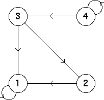

6. (a)
| From the graph we see the allowed bin transitions are
|
| The occupied length 2 addresses are 11, 12, 13, 23, 34, and 44. |
| The empty length 2 addresses are the remaining ten 14, 21, 22, 24, 31, 32, 33, 41, 42, and 43. |
| From the graph we see |
| Except for iterations starting exactly at |
| So unless we begin iteration at |
Here is the transition graph.
|  |
| The loop at 4 shows the driven IFS can generate the point with
address 4infinity corresponding to the fixed point
|
| All other paths through the transition graph lead to 1, at which point we are forced to loop at 1. |
| So at least in this case, the behavior of the driven IFS can be read easily from the transition graph. |
Return to Exercises.